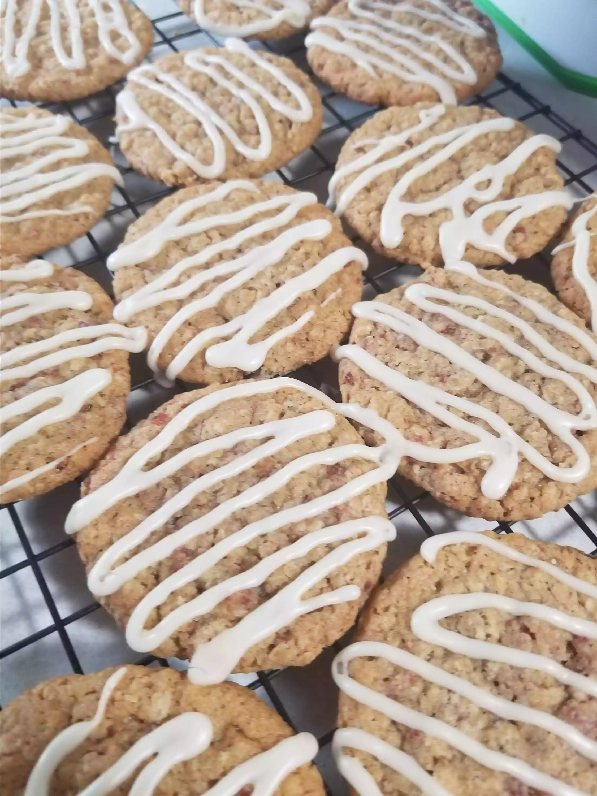

Bacon Oatmeal Breakfast Cookies

Description
All the flavors that make up the perfect breakfast in one cookie!
Ingredients
- ½ pound bacon
- ½ cup butter, softened
- ½ cup white sugar
- ½ cup packed brown sugar
- 1 egg
- ½ teaspoon vanilla extract
- 1 cup all-purpose flour
- ½ teaspoon baking soda
- ½ teaspoon salt/li>
- 1 teaspoon ground cinnamon
- 1 ½ cups quick cooking oats
- ⅞ cup confectioners' sugar
- 1 ½ tablespoons water, or as needed
- 1 ½ tablespoons real maple syrup
Directions
- Place the bacon in a large, deep skillet, and cook over medium-high heat, turning occasionally, until evenly browned, about 10 minutes. Drain the bacon slices on a paper towel-lined plate. When cool, chop the bacon, and set aside.
- Beat the butter, white sugar, and brown sugar together in a large mixing bowl until fluffy with an electric mixer on medium speed, then mix in egg, and vanilla extract until thoroughly combined. Whisk the flour, baking soda, salt, and cinnamon together in a bowl, and stir the flour mixture into the butter mixture. Gradually stir in the oats and bacon, about 1/3 cup of oats at a time, and cover the dough. Refrigerate at least 1 hour.
- Preheat oven to 375 degrees F (190 degrees C). Thoroughly grease baking sheets.
- Scoop about 1/3 cup of dough per cookie, roll into balls, and place the balls at least 3 inches apart on the greased baking sheets. Use a fork dipped in water to flatten the balls slightly.
- ake in the preheated oven until the cookies are golden brown with slightly browner edges, 10 to 12 minutes. Allow to cool on baking sheets 3 to 5 minutes before removing to finish cooling on racks.
- To make glaze, whisk confectioners' sugar, water, and maple syrup together in a bowl until smooth. Let the glaze stand about 5 minutes to slightly thicken; drizzle onto the tops of the cookies. Allow glazed cookies to stand about 20 minutes to set up before storing.
Home